Academic & Commercial Portfolio / 2023 - 2026
DIGITAL TAPESTRY &
CONSCIOUSNESS RESONANCE
AI 时代创意劳动的异化与清醒抵抗思辨交互系统。
基于点云参数化算法生成的数字文物记忆重构实验。
女性主义身体政治、流量跟踪与量子坍缩动态海报。
莉莉丝游戏 Dislyte 宣发 CG、空间考古学场景概念与电影分镜。
Designer / Director
HUANG YINGEN (黄音根)
Target Field
Interactive Media & Art Direction
Prompt Factory: A Simulator of Creative Labor
How many prompts does it take to lose your imagination?
The promise of Generative AI was to liberate creative labor. Yet in many contemporary workflows, designers increasingly function as operators of algorithmic systems rather than authors of original ideas.
Creative work is gradually shifting from making to prompting, from crafting to selecting, and from designing to endlessly refining machine-generated outputs. Under the logic of productivity and optimization, creativity risks becoming a repetitive cycle of prompt engineering, evaluation, and revision.
This project is a critical design simulation that models the everyday experience of creative workers in AI-driven production environments. Through gameplay, it explores how automation reshapes authorship, agency, and the psychological condition of creative labor.
Key Research Questions
- • Q1 When creativity becomes prompt engineering, who can still claim authorship?
- • Q2 Can a game system make players experience the invisible exhaustion of automated creative labor?
- • Q3 What happens when productivity becomes the only measure of creative value?
"The Rework Hell of Technological Acceleration"
As Generative AI reshapes creative industries, creators are increasingly shifting from makers to optimizers. As generation becomes easier, creative work is reduced to an endless cycle of selection, revision, and regeneration.
Based on research involving 150 creative practitioners, this project develops an unwinnable mathematical model in which each cycle of rework increases approval rates while reducing the player's Thinking Index. Players eventually reach a state of maximum productivity but minimum creativity.
Theoretical Framework: Social Acceleration
Technological progress does not reduce labor; it accelerates expectations of productivity. This project visualizes how AI-driven workflows can transform creativity into an endless optimization loop.
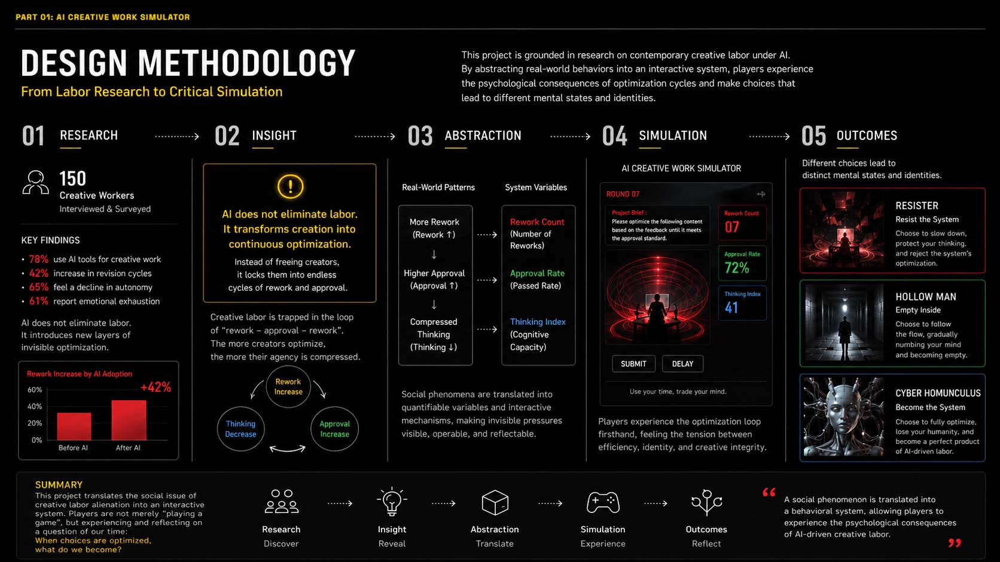
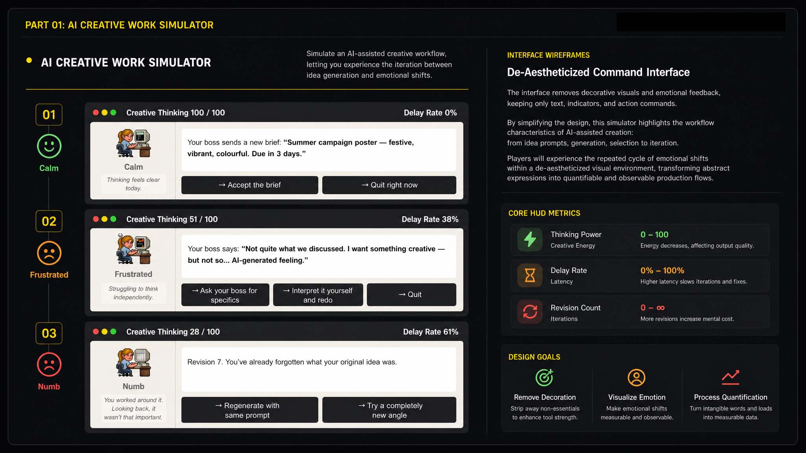
Three Outcomes of Creative Alienation
Players arrive at three distinct endings shaped by their responses to acceleration, optimization, and automation. None represents victory. Each reflects a different condition of creative labor in the age of AI.
The Resister
The player chooses to leave the system. Rather than surrendering creativity to endless optimization, they preserve their autonomy through refusal. Not a victory, but an act of resistance.
.png)
Hollow Man
After prolonged AI-assisted production and passive feedback cycles, the player's Thinking Index reaches zero. A state of Quiet Burnout is triggered. The body continues working, but the creative self is gone.
.png)
Cyber Homunculus
Among the few who surpass the impossible 10% approval threshold. Yet this is no victory. Their will is fully assimilated into automated systems, becoming nothing more than a data interface obedient to client demands.
.png)
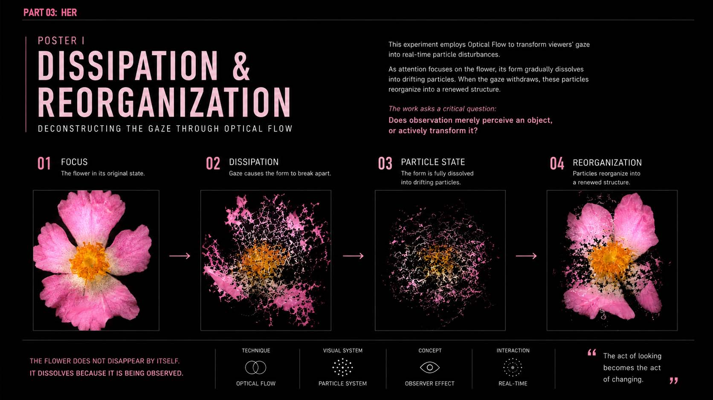
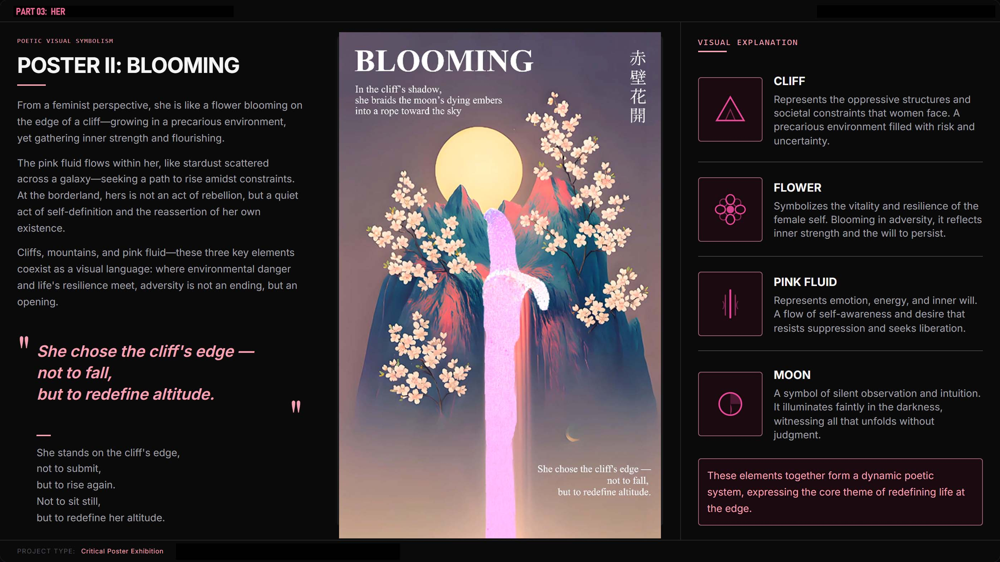
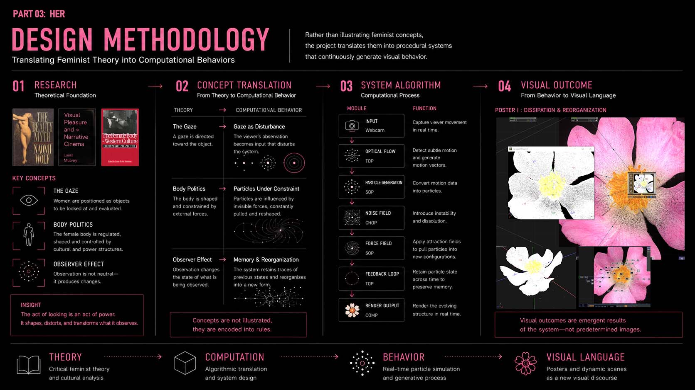
DESIGN METHODOLOGY
Translating Feminist Theory into Computational Behaviors
Rather than illustrating feminist concepts,
the project translates them into procedural systems
that continuously generate visual behavior.
Theoretical Foundation
The Beauty Myth
Naomi Wolf
Visual Pleasure & Narrative Cinema
Laura Mulvey
The Female Body in Western Culture
Susan Bordo
KEY CONCEPTS
THE GAZE
Women are positioned as objects to be looked at and evaluated.
BODY POLITICS
The female body is regulated, shaped and controlled by cultural and power structures.
OBSERVER EFFECT
Observation is not neutral— it produces changes.
INSIGHT
The act of looking is an act of power.
It shapes, distorts, and transforms what it observes.
From Theory to Computational Behavior
THEORY
COMPUTATIONAL BEHAVIOR
The Gaze
A gaze is directed toward the object.
Gaze as Disturbance
The viewer's observation becomes input that disturbs the system.
Body Politics
The body is shaped and constrained by external forces.
Particles Under Constraint
Particles are influenced by invisible forces, constantly pulled and reshaped.
Observer Effect
Observation changes the state of what is being observed.
Memory & Reorganization
The system retains traces of previous states and reorganizes into a new form.
Concepts are not illustrated,
they are encoded into rules.
Computational Process
MODULE
FUNCTION
INPUT
Webcam
Capture viewer movement in real time.
OPTICAL FLOW
TOP
Detect subtle motion and generate motion vectors.
PARTICLE GENERATION
SOP
Convert motion data into particles.
NOISE FIELD
CHOP
Introduce instability and dissolution.
FORCE FIELD
SOP
Apply attraction fields to pull particles into new configurations.
FEEDBACK LOOP
TOP
Retain particle state across time to preserve memory.
RENDER OUTPUT
COMP
Render the evolving structure in real time.
From Behavior to Visual Language
POSTER I : DISSIPATION & REORGANIZATION

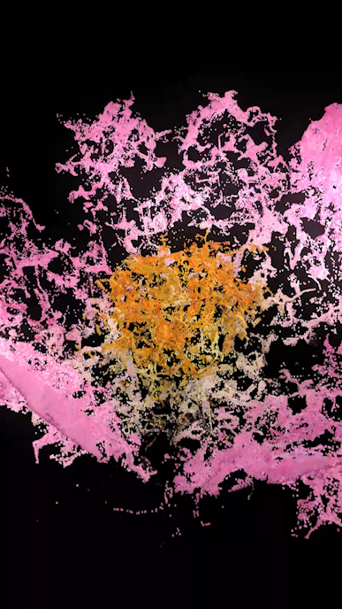
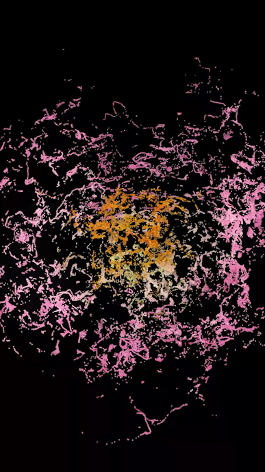
POSTER II : BLOOMING DYNAMICS
DYNAMIC SCENE (REAL-TIME OUTPUT)
Visual outcomes are emergent results
of the system—not predetermined images.
THEORY
Critical feminist theory
and cultural analysis
COMPUTATION
Algorithmic translation
and system design
BEHAVIOR
Real-time particle simulation
and generative process
VISUAL LANGUAGE
Posters and dynamic scenes
as a new visual discourse
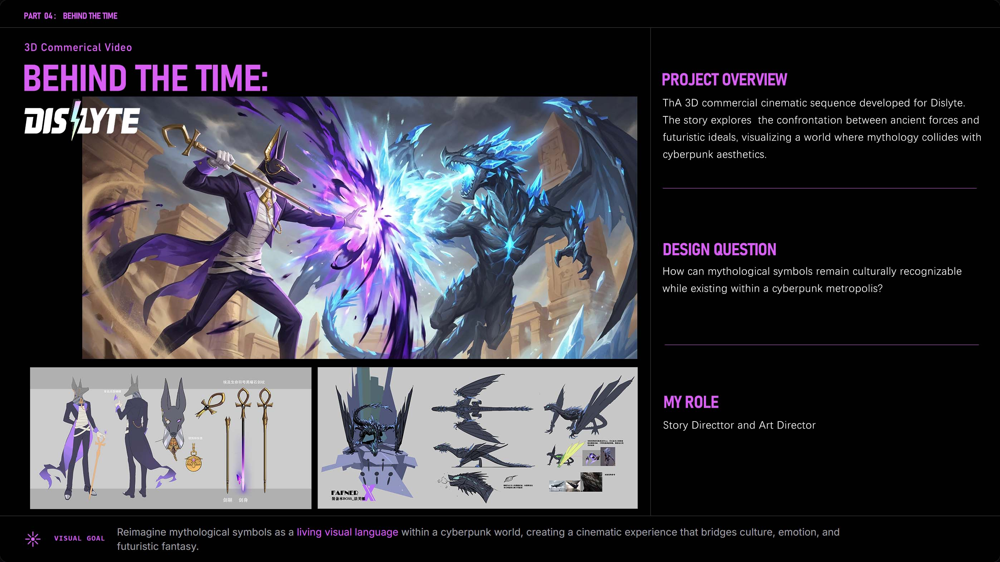
BEHIND THE TIME:
My Role: Director, Art Director,
Scene Designer
A 3D commercial cinematic sequence developed for Dislyte. The story explores the confrontation between ancient forces and futuristic ideals, visualizing a world where mythology collides with cyberpunk aesthetics.
How can mythological symbols remain culturally recognizable while existing within a cyberpunk metropolis?
- • Scene Direction
- • Visual Narrative
- • Environment Design
- • Composition & Camera Language
- • Cinematic Lighting
- • Art Direction
Reimagine mythological symbols as a living visual language within a cyberpunk world, creating a cinematic experience that bridges culture, emotion, and futuristic fantasy.
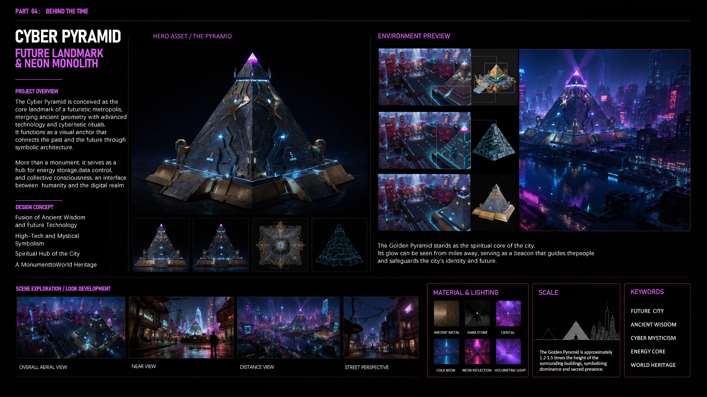

Reconstructing Memory Through Interior Space
The pyramid interior combines ancient Egyptian murals, hieroglyphic inscriptions, ceremonial architecture, and contemporary urban relics into a single spatial narrative. Each object functions not only as environmental decoration, but also as a fragment of cultural memory embedded within the scene.
Rather than recreating history, the environment stages a dialogue between ancient mythology and speculative futures. Traditional symbols are intentionally relocated into futuristic architecture, producing a sense of temporal dislocation.
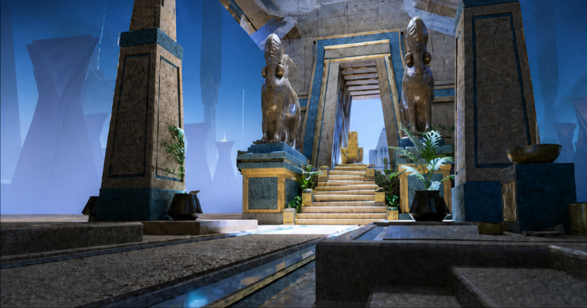
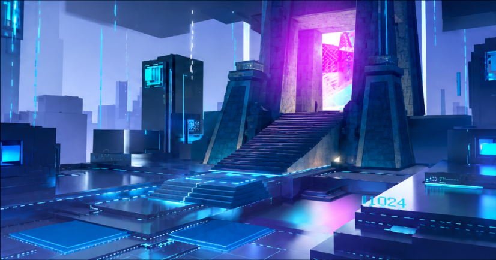
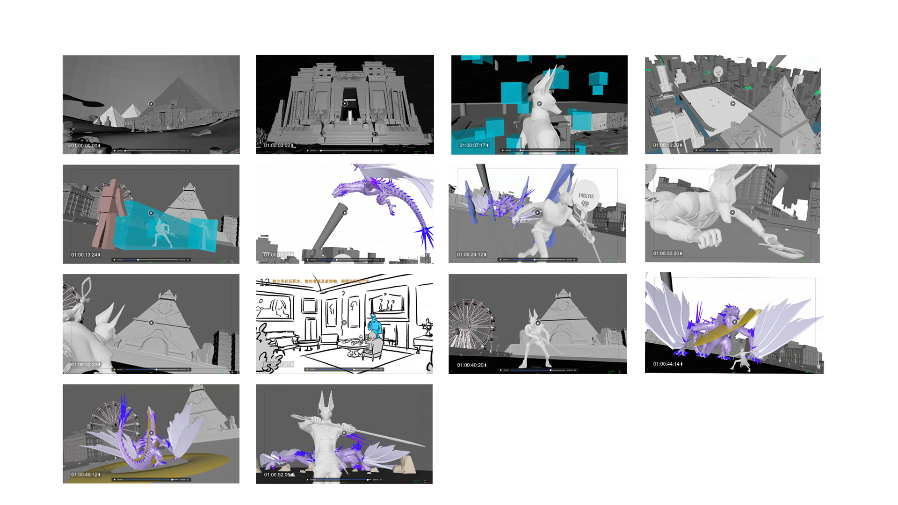
在算法的喧嚣中探寻自决意识
本部作品集不仅仅是一次纯粹的三维视觉资产与软件工具开发展示，更是一场将 思辨政治 (Critical Politics)、媒介本体论 (Medium Ontology) 以及 商业演绎视角 (Cinematic Commercial AD) 高度融合的交互演绎。
无论是Part 1中对命令决胜概率异化的抵抗，还是Part 2和Part 3中用流线纹编织量子花解析凝视以及凝视，亦或是Part 4中跨部门协调、严格赛博古埃及CGI，本质上都在试图证明：在新技术重视视觉文化的命下，创作者应成为主动探索深层思维的 媒介总监 (Art Director)，而非顺从算法的被动性笔。
[ 2023 - 2026 Academic Campaign Ends ]
感谢审阅。让我们在物理实体的解析之外，共同窥见数字织锦编织者弦外的微弱意识共鸣。
RED LINE
Generative Weaving of Cultural Memory
Conventional heritage restoration seeks to recover the original physical form of artifacts. This project explores an alternative possibility:
Can cultural memory survive after the artifact itself has disappeared?
Built in TouchDesigner, the system transforms fragmented 3D-scanned artifacts into dynamic data nodes connected through an evolving generative network. These fragments are continuously rewoven into emergent digital life forms.
In this context, restoration is no longer about reconstructing the past, but enabling memory to persist through new media.
Key Research Questions
Q1Where does memory reside when the artifact is gone?
Q2Is AI weaving history itself, or an alternative possibility of history?
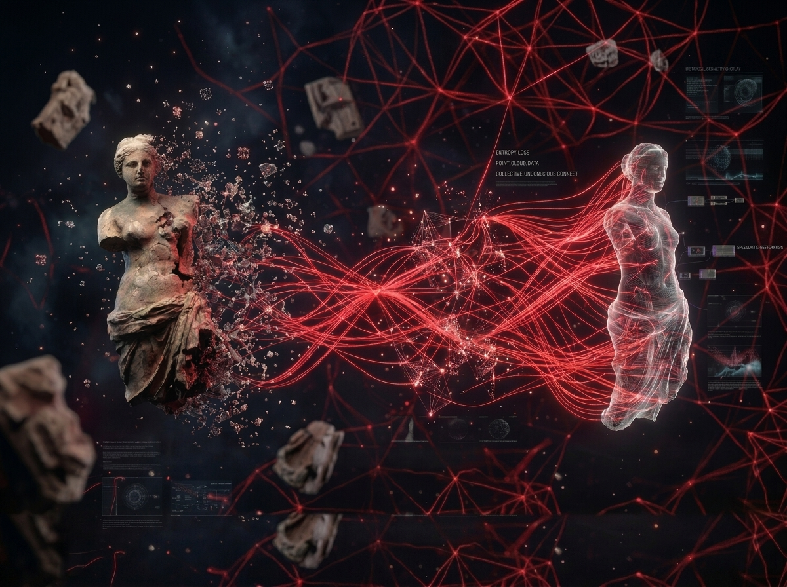
PARTICLES: 240
NOISE STATE: ACTIVE
ROTATION: AUTO
Red Thread & Point Cloud Generative System
Built with TouchDesigner SOP and CHOP networks, the system transforms cultural artifacts into dynamic point-cloud structures connected through evolving red-thread networks.
Users can manipulate particle density, noise force, and connection distance in real time, observing how digital memory continuously emerges and dissolves between order and chaos.
Memory is not preserved. It is continuously reassembled.
Weaving Fragmented Histories Through Force Fields
The system is built using TouchDesigner SOP networks. Proximity-based connections are first established through Connect SOP, after which Turbulence Noise fields continuously reshape the network structure.
As the force amplitude increases, stable connections begin to oscillate, stretch, and reorganize. The red-thread network moves between order and chaos, simulating the fragmentation and reconnection of memory over time.
History is not a static archive, but a network continuously connected, disturbed, and reassembled.
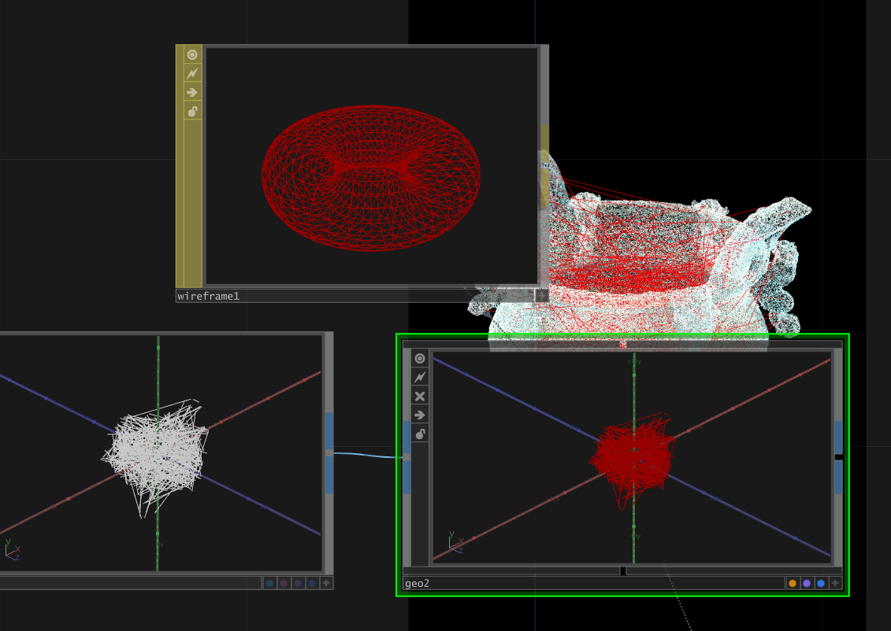
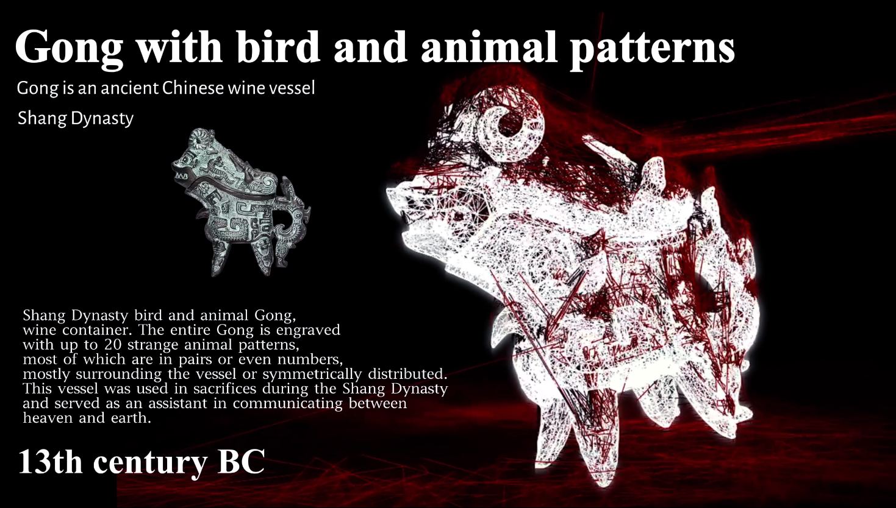
Translating History Through Interaction
Every click, drag, and parameter adjustment reshapes the digital structure of the artifact.
History is no longer presented as a static object for observation. Instead, it is continuously reactivated through interaction between the user and the system. User actions become a medium connecting past and present, transforming cultural memory from preservation into generation. Each interaction reorganizes particles and red-thread connections, allowing cultural artifacts to acquire new forms of digital life.
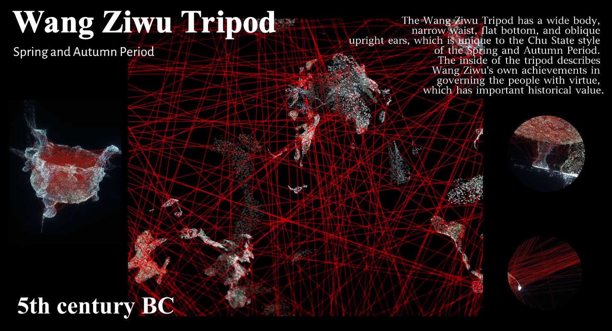
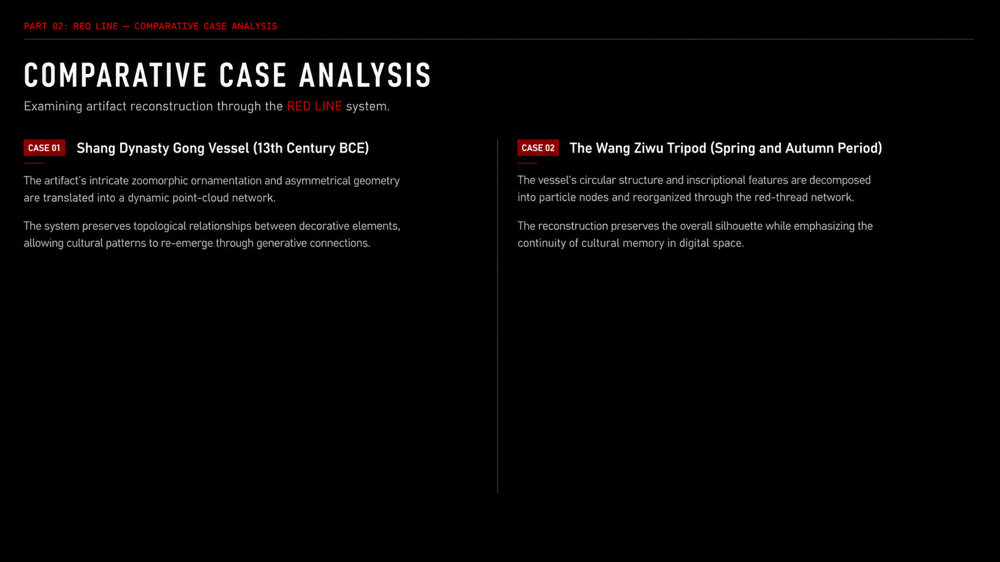
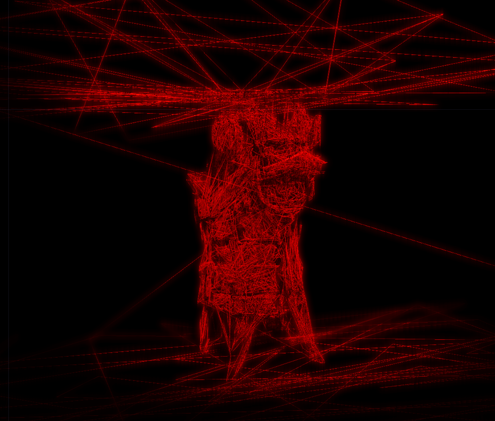
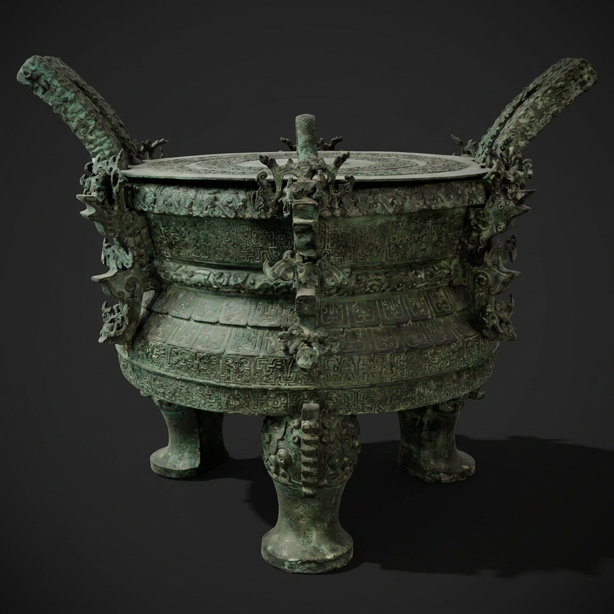
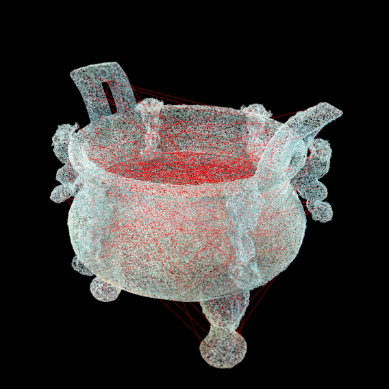
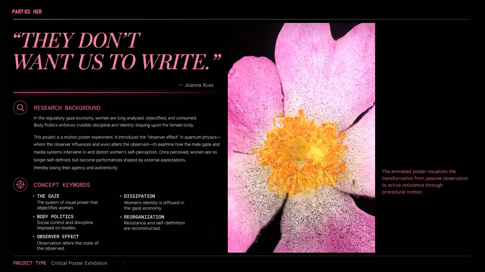